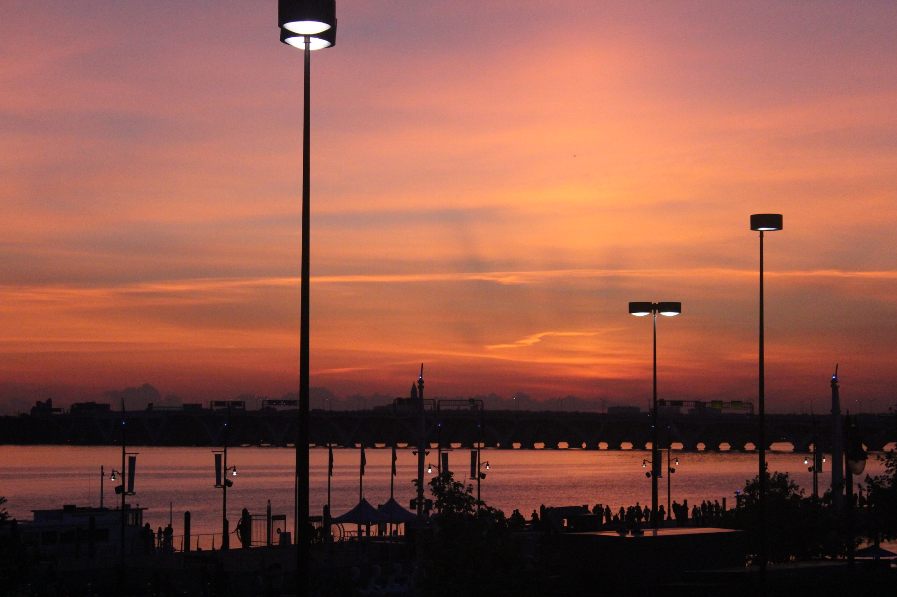

I spend most of my time behind a screen, whenever I am not coding I like to explore EDM (Electric Dance Music), play video games & watch anime.
Some of the things I deeply enjoy doing that do not require me to be at one place for a long period of time are working out & traveling.
Anime
I first started watching anime when I was 14 years old and it has helped me become the person I am today.
The majority of animes tend to make their main characters personalities all the same. They tend to be someone who is
very ambitous, humble & overall determined. They face multiple obstacles in their life that they refuse to allow to stop them.
It has taught me that no matter what your background is everyone is capable of achieving their goals, the only thing you need is the right mindset &
the ability to believe in yourself but along your journey you must also help the people around you.
EDM(Electro Dance Music)
I cannot get enough of edm, the majority of the songs all have a unique story to tell that resignate with many people. Everyone who is part of the edm culture is very outgoing, it is a
beautiful sight to see so many people come together and enjoy something they have a passion for. Above I have a video of one of my favorite Djs playing a virtual concert, please have a listen :)

Traveling
I have only travelled within the US so far but some of the places I have been to are Virginia, West-Virginia, Maryland,
North Carolina, South Carolina, Florida, Kansas, Michigan, and Arizona. I love visting and exploring new areas that
I havent been to before. I feel inspired by the beauty of the world and it fuels my determination to achieve my goals.